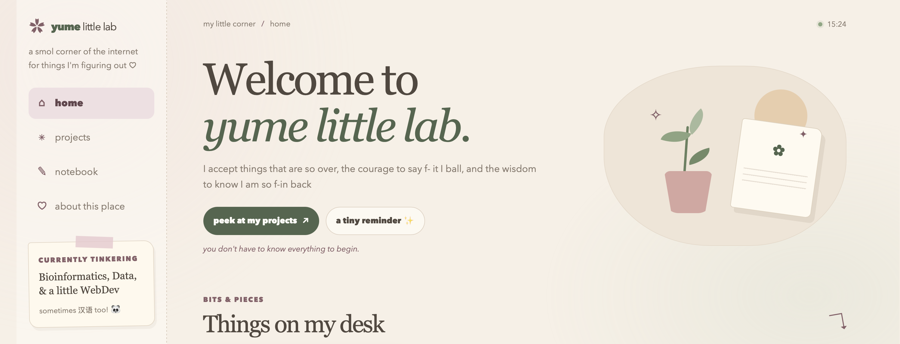
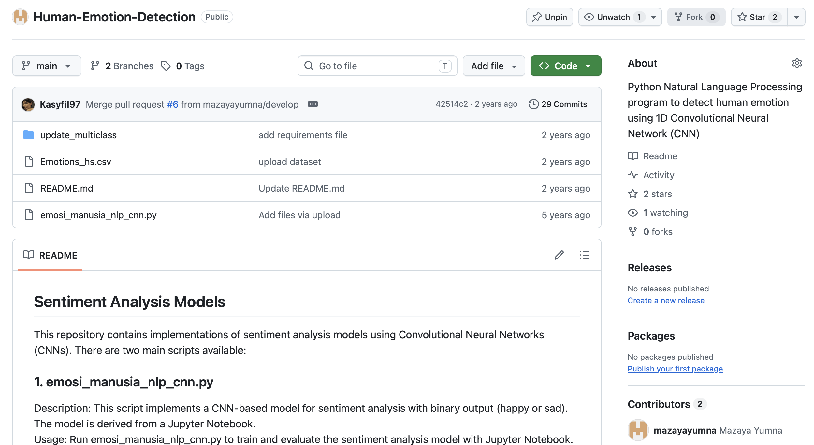
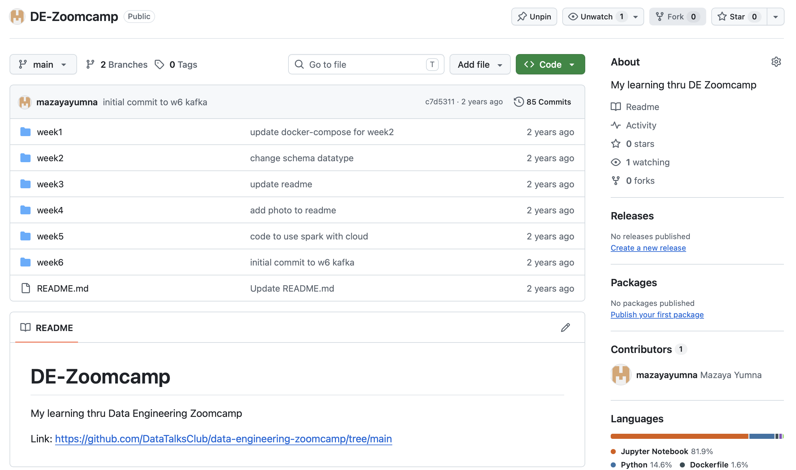
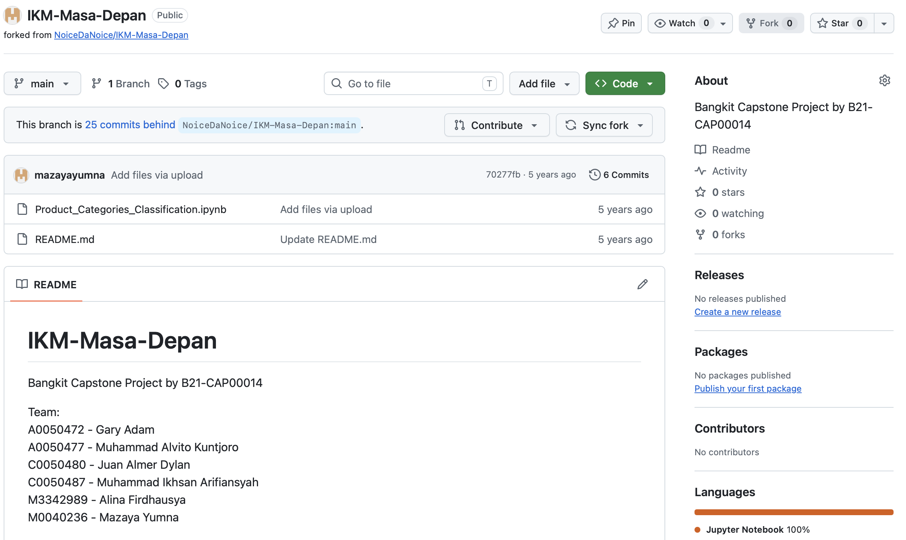

some of the repos · 001
A home for projects that I have on my GitHub.
Yume Little Lab ⚗️
YES! this website! Written manually with genuine curiousity, starting something that I never do before. This website is far from perfect, but I build it from scratch. Also with pouring love ❤

see it on GitHubHuman Emotion Detection 😃😢
- Python Natural Language Processing (NLP) program to detect human emotion using 1D Convolutional Neural Network (CNN)
- Algorithm: Supervised Learning | Classification: Binary
- Dataset is from: Kaggle Emotion Dataset

see it on GitHubData Engineering Zoomcamp 🛠️
- W1: Intro to GCP, Docker, PostgreSQL, and Terraform
- W2: Data Lake and Airflow
- W3: Data Warehouse and BigQuery
- W4: Analytics Engineering and dbt
- W5: Batch Processing and Spark
- W6: Stream Processing and Kafka

see it on GitHubIKM Masa Depan 🏪
My Bangkit Capstone Project with B21-CAP00014 team. This Python Natural Language Processing (NLP) script is to classify a product into 5 product categories: olahraga, pertukangan, fashion, elektronik, handphone
- Word Embedding: Word2Vec Bahasa Indonesia
- Dataset: Produk Tokopedia

see it on GitHub